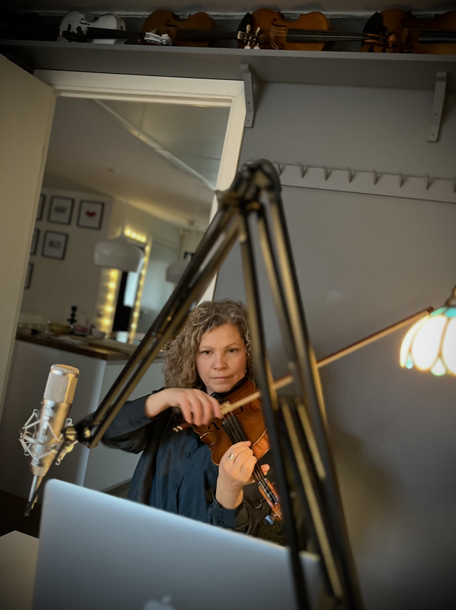
Vill du få undervisning anpassad till dina förutsättningar, oavsett var du är? Onlinelektioner är perfekt både för dig som önskar enstaka lektioner och för dig som vill ha återkommande undervisning. Du behöver ingen avancerad utrustning. Oftast räcker det med en laptop (och en fiol). Du hittar tillgängliga tider här
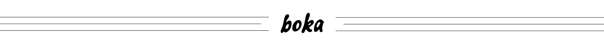
Boka din virtuella privatlektion
Klicka på en ledig tid i kalendern nedan och följ anvisningarna.
När din bokning är klar får du bekräftelse via epost. Med din bekräftelse får du en länk till din lektion. Länken går att öppna i vilken webbläsare som helst. Under lektionen använder du datorns mikrofon, kamera och högtalare.
Behöver du mer specifik teknisk information så har vi samlat det här.
Utöver länken till lektionen finns även en möjlighet att fylla i ett formulär. Där kan du lämna information om vad du vill uppnå med lektionerna och dina tidigare erfarenhet med mera. Formuläret är inte obligatoriskt utan används endast för att anpassa lektionsinnehållet.
Lektionen kan avbokas utan kostnad upp till 24 timmar innan lektionen startar.
En lektion tar cirka 30 minuter och kostar 800 SEK.
Har du frågor? Kontakta mig
Teknisk information
Du behöver ingen avancerad utrustning - oftast räcker det med en laptop (och en fiol).
Under lektionen använder du datorns mikrofon, kamera och högtalare. Se till att du har en stabil internetanslutning och en lugn miljö där du kan spela ostört.
Placera datorn så att kameran kan fånga både din spelposition och fingrarna på greppbrädan.
Jag använder verktyget Zoom, men du måste inte ladda ner någonting i förväg då vi även kan använda webbläsaren. I zoom kan man ställa in mikrofonens ljud så det är anpassat till musik. Det går snabbt och om du inte hittar inställningen på egen hand gör vi det tillsammans i början av vår lektion.
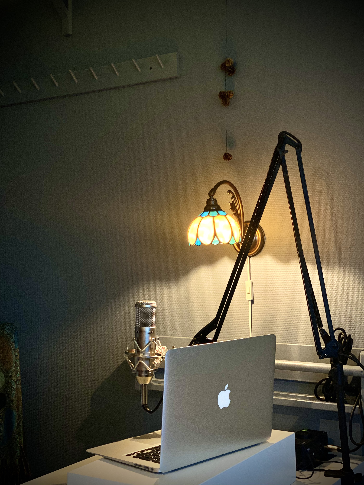
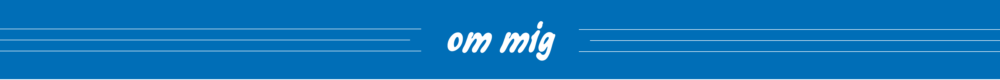
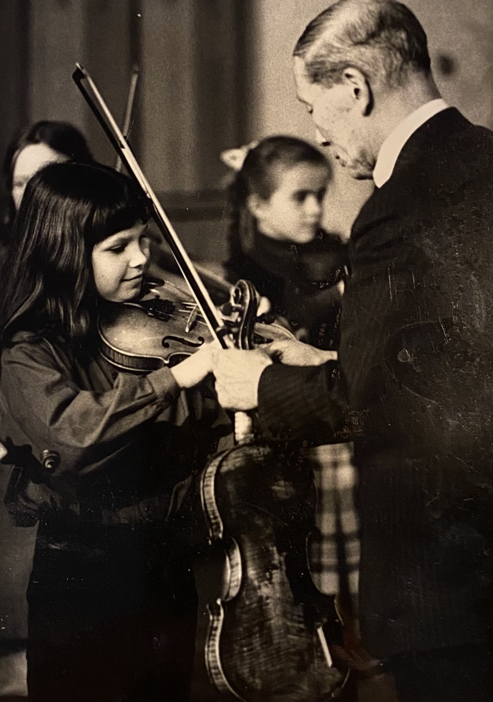
Om Sara gungar
Första gången jag undervisade i fiol var 1988. Det var på musikskolan i Tidaholm. Jag var bara sexton och hade själv varit elev där.
Jag började spela redan som treåring. Min pappa var traditionellt utbildad fiolpedagog men intresserade sig under början av sjuttiotalet för suzukimetoden med den påföljden att jag blev hans första elev. Han var både målmedveten och hängiven, ordnade till och med att jag fick spela för självaste Shinichi Suzuki 1981.
Länge hade jag siktet på att bli musiker och nådde efter studier på Edsbergs musikinstitut och Mälardalens högskola fram till en fil. kand. i kammarmusik. Studerade även två somrar för John D. Kendall i USA.
Men det visade sig att det var som fiollärare jag trivdes bäst. Att kombinera de metodiker jag själv undervisats i med elevernas skiftande förutsättningar inspirerade mer än en karriär som solomusiker. Sedan dess har jag arbetat på olika musik- och kulturskolor runtom i Sverige.
Givetvis fortsätter jag spela själv. Och när jag säger ”själv” menar jag oftast med andra. Både på konserter och i studio. Att hålla liv i spelandet är livsviktigt för mig.
Eftersom jag lärde mig spela tidigt är musik som ett språk för mig; Ett lika naturligt sätt att uttrycka sig på som att prata. Det som började med ”Blinka lilla stjärna” och ”Sara gungar” kommer fortsätta livet ut.
Det är förresten jag som är Sara, hon som gungar. Min pappa Vigo skrev den runt 1975.
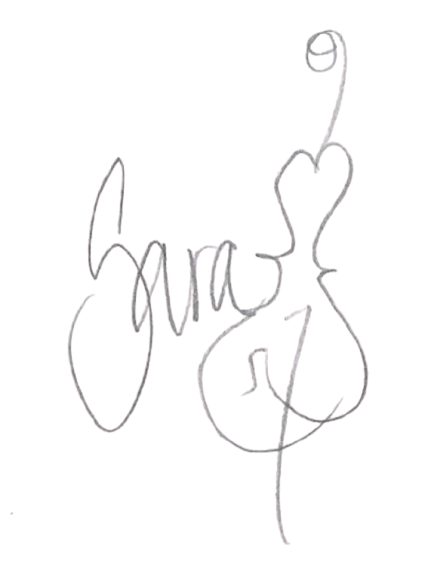
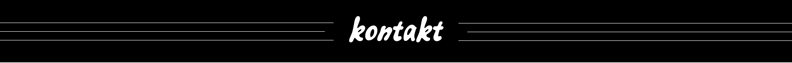
Kontakta mig
Det finns flera sätt att nå mig:
- E-post: sara@tacksam.com
- LinkedIn: @dinkanal
- Instagram: @dinkanal
Jag svarar i mån av tid.
Jag har en opolitisk och ickereligiös hållning i min undervisning. Det innebär att jag inte arbetar med musik som är kopplad till politiska budskap eller religiösa högtider.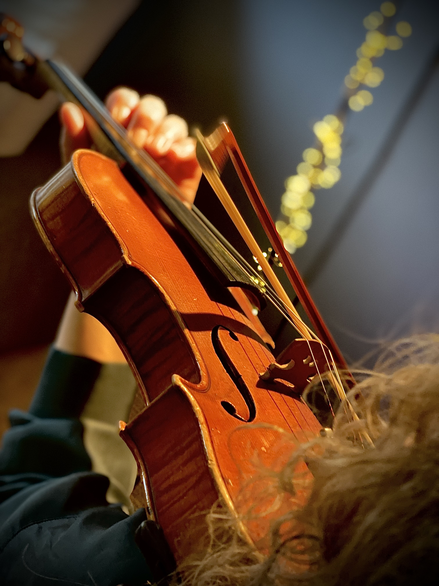
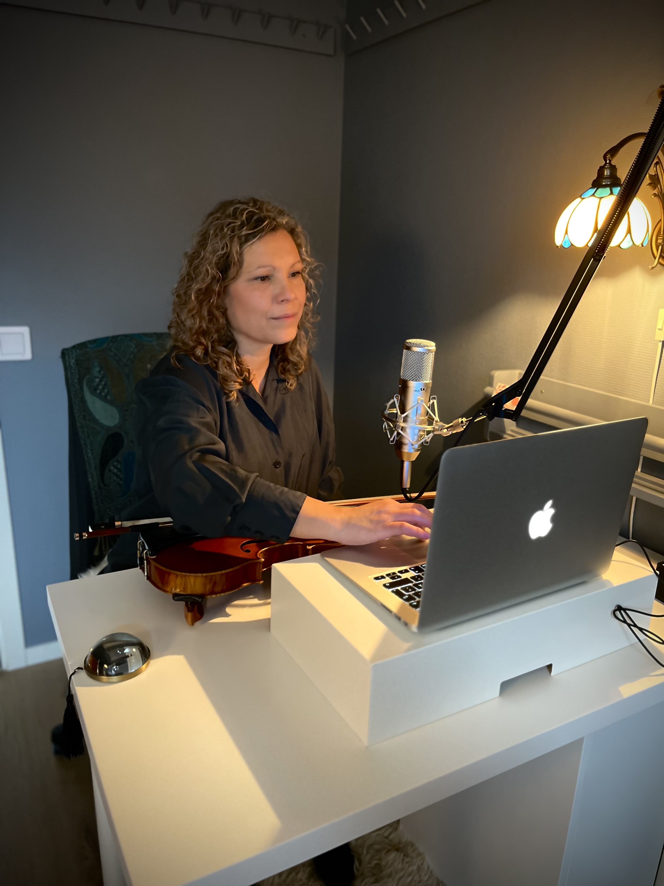
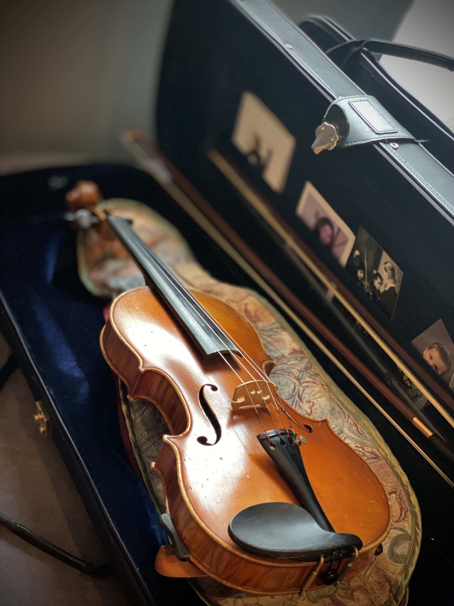